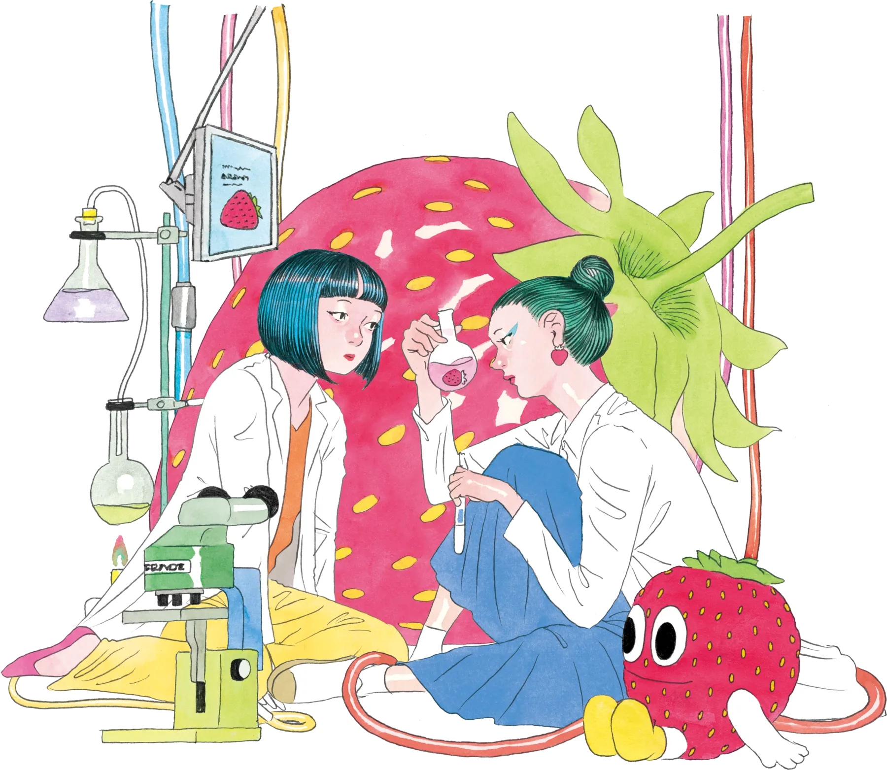
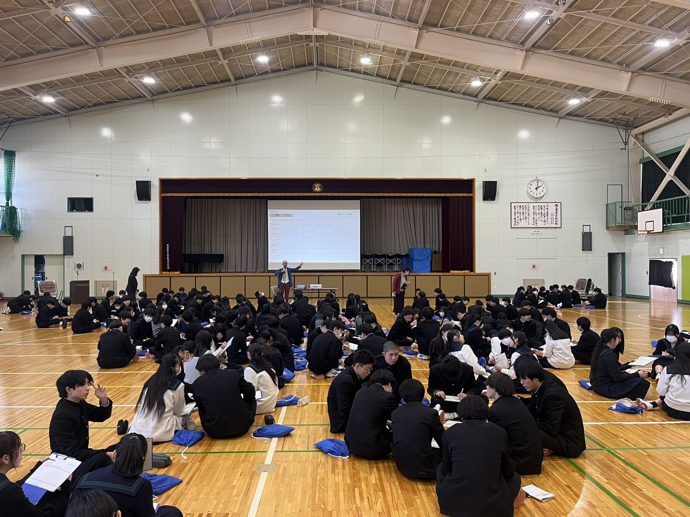

CONCEPT
いちごをもっと推せる。
誰でも参加できる、体験型研究開発のコミュニティ。
MOTTO
埼玉いちご大學は、「いちごが好き」という気持ちを持ち寄る場所です。
農家さんの畑を歩き、品種の違いを味わい、
「これ、何かに使えないかな？」を一緒に考える。
秩父・横瀬を中心に、いちごを起点にした
人・知恵・地域のネットワークを育てています。
PARTICIPANTS
220名
これまでに集まった人
IDEAS
135件
生まれたアイデア
FARMERS
9軒
連携いちご農家
PARTNERS
14社
連携・コラボした企業
STORY
農家、企業、高校生、クリエイター——肩書きを越えて集まった人たちが、
一年かけて、ひとつの商品まで形にしました。

01 / GATHER
集まる
45名がArea898に集合

02 / IDEATE
発想する
6チーム×6アイデア

03 / DELIVER
形にする
いちご塩として商品化
